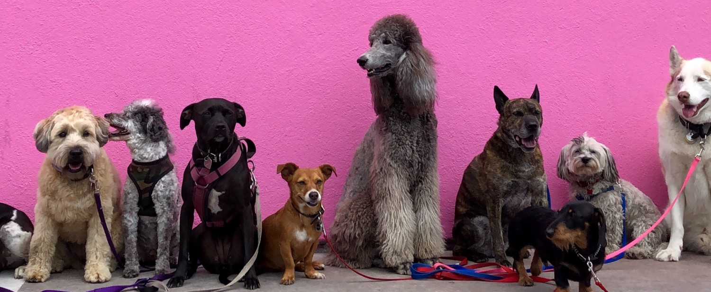

Open Call for Project Ideas
Do you have a burning question about canine cognition that requires testing hundreds of dogs from around the world?
Tell us about it! Propose your idea for a ManyDogs project by JULY 31, 2023!
We’re seeking motivated individuals to submit their research ideas and commit to leading our next big ManyDogs projects!
For more information and to submit your proposal, complete our survey at http://bit.ly/416TXN6 by JULY 31, 2023. Feedback will be provided by AUGUST 31, 2023.
Feel free to reach out to the ManyDogs Leadership Team with questions. We’re looking forward to hearing from you!
Proposal information
The person applying to initiate a ManyDogs Project will be the leader of that project.
The responsibilities for this position include:
- Writing and submission of a preregistered report The ManyDogs1 registered report is a good example
- Assembling a diverse group of colleagues to provide expertise and help with the following phases of your project -
- Developing a detailed experimental protocol so many labs can accurately replicate the test
- Setting up Qualtrics surveys for data collection
- Coordinating local participation and data collection if a local lab is available
- Organizing, cleaning, and analyzing data according to open science principles of reproducibility, availability of data and code, collaboration, and ethical data use. The Turing Way online book is a great introduction to these practices.
- Writing and submitting at least one manuscript presenting the findings related to the hypotheses presented in the registered report
The ManyDogs Project is commited to diversity and inclusion and welcomes Project Leaders from many fields and backgrounds. We encourage applications from early career researchers. It is important to recognize that this position requires a commitment of several years during which a researcher may change institutions but will continue in their independent role with their ManyDogs project. The volunteer ManyDogs Leadership Team and committees work to provide a collaborative community and the infrastructure for the consortium over the long term. We are available to provide support and guidance to individual project leaders in areas like study methodology, and centralized data storage, cleaning, and analysis.
The process for proposal progression is as follows:
- Project proposals are initially submitted through this form by July 31st, 2023.
- All submissions will be reviewed by the MD Project Selection Committee for suitability and feasibility.
- The committee will provide feedback to the proposer by August 31st, 2023.
- After revisions if required, the project is sent to the broader MD community. If the project garners enough interest to meet the proposed numbers (accounting for attrition), the project is officially approved and moves on to be supported by the Methods Development and Open Science & Data Management Team
If you’re not already connected - consider joining our network:
To join the ManyDogs Project, complete our member registration form. Also, consider following us on Twitter or Mastodon for additional updates.
Questions about project submission? Contact us via email.